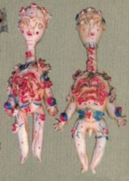
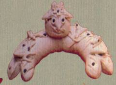

|
在中國五千年的文化當中，蘊藏了許多豐富的民俗及文化內涵，而台灣常見的傳統技藝，很多也是源自中國的直接或間接的傳承，「民以食為天」，而捏麵自古就是中國農業社會的民間藝術，所以使用以食為主的創作素材是相當普遍的。又因為中國南北氣候文化上的不同，「北方為麵食文化，南方為米食文化」，所以捏麵的素材與方法與民間習俗都不盡相同。
南北麵塑差異 |
| ●北方麵塑﹝麵花﹞製作方法 |
| 1. |
以麥磨粉，和水，外加酵麵、礬，和勻。 |
| 2. |
塑形，基本手塑技法：揉、搓、壓、捻、擠、印、黏接，以及使用刀、剪、梳…等工具。 |
| 3. |
放入蒸鍋蒸製 |
| 4. |
染色，彩繪的麵塑，色分透明與不透明，透明色叫品色，分有桃紅、藍、黃，不透色又為粉質顏料，叫膏子色，就是廣告色，有湖藍及白色，而調色時會加酒以利和勻色粉。 |
| 5. |
彩繪當中時有上膠﹝皮膠或骨膠﹞以分色隔離。 |
| 6. |
晾晒，完成。 |
|
| ●南方麵塑﹝江米人、糯米尪仔﹞製作方法 |
| 1. |
以糯米為主，但還有參雜麵粉，加水混合揉成麵團，揉成手掌大小，放入水中煮。 |
| 2. |
熟後，加入精鹽﹝防止硬化﹞、礬﹝防潮、防生﹞、防腐劑﹝防霉﹞，搓勻。 |
| 3. |
待冷卻後，加入水溶性顏料分成多塊色土既可。 |
| 4. |
捏塑，以指塑為主，配合一些工具，技法有分為：搓法、壓法、點法、螺旋紋、流星紋、黏合法等。而基本形：﹝以此加以變化的造型﹞球形、水滴形、長條形。 |
|
在中國，麵塑文化流行於整個黃河流堿，甘肅、寧夏、陝西、內蒙、山西、河南、河北、山東都有製作麵塑的習俗。各地稱呼不同，但作法皆大同小異，如陝西郃陽統稱「麵花」﹝此暀]是麵塑之學名﹞；關中叫「麵虎」；晉北、陝北及內蒙西部地方稱「麵人人」；河北磁州稱「麵羊」；山東郎庄稱「麵老虎」；河北廣宗也叫「麵老虎」；膠東稱「昇蟲」「花饃」；萊州﹝掖縣﹞叫「巧餑餑」；還有些地方叫「花糕」、「混沌」「果實」等。南方人則稱呼「江米人」、「捏麵人」；台灣•泉州等地又叫「米粿雕」「糯米尬仔」。這些地方上的名稱可見得，麵塑的多樣性及豐富性
。
|
|

晉北、陜北、內蒙西部
「麵人人」 |
|

山東郎庄、河北廣宗「麵老虎」 |
|